무선설비산업기사 (2012-03-11 기출문제)
1과목: 디지털 전자회로
1. 전압 안정계수가 0.1인 정전압회로의 입력전압이 ±5[V] 변화할 때 출력 전압의 변화는?
- ±0.⑤[mA]
- ±0.5[mA]
- ±0.⑤[V]
- ±0.5[V]
(정답률: 80%)

2. 초크 코일과 콘덴서로 구성된 필터 회로에서 리플율을 감소시키는 방법으로 옳은 것은?
- 인덕턴스 L을 크게 한다.
- 캐피시턴스 C를 작게 한다.
- 주파수를 낮춘다.
- 부하저항 R을 작게 한다.
(정답률: 87%)
3. 60[Hz] 사인파가 단상 전파정류기의 입력에 공급된다. 출력주파수는 얼마인가?
- 240[Hz]
- 120[Hz]
- 60[Hz]
- 30[Hz]
(정답률: 89%)
4. 그림과 같은 회로에서 RE에 흐르는 전류는 무엇인가?
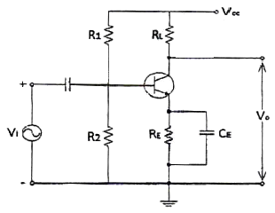
- 직류성분만 흐르고 교류성분은 거의 흐르지 않는다.
- 교류성분만 흐르고 직류성분은 거의 흐르지 않는다.
- 직류성분과 교류성분의 합이 흐른다.
- 직류성분과 교류성분의 차가 흐른다.
(정답률: 77%)
5. 다음 중 적분기에 사용하는 콘덴서의 절연저항이 커야하는 이유로 맞는 것은?
- 연산의 정밀도가 저하되기 때문에
- 연산이 끝나면 전하가 방전하기 때문에
- 단락시켜도 잔류전압이 방전되지 않기 때문에
- 회로 동작이 복잡해지기 때문에
(정답률: 79%)
6. 다음 중 그 값이 작을수록 좋은 특성을 나타내는 것은 무엇인가?
- 정류기의 정류효율
- 동상신호 제거비
- 증폭기의 신호대 잡음비
- TR 바이어스 회로의 안정계수
(정답률: 84%)
7. 이미터 전류를 1[mA] 변화시켰더니 컬렉터 전류의 변화는 0.96[mA]였다. 이 트랜지스터의 β는 얼마인가?
- 0.96
- 1.04
- 24
- 48
(정답률: 74%)
8. LC 발진기에 해당되지 않는 것은?
- 콜피츠 발진기
- 하틀리 발진기
- 클랩 발진기
- 위상천이 발진기
(정답률: 82%)
9. 최대효율을 얻기 위한 발진기의 동작 방식은 다음 중 어느 것인가?
- A급
- AB급
- B급
- C급
(정답률: 89%)
10. QPSK에서 반송파 간의 위상차는?
- π/2
- π
- 2π
- 3π/2
(정답률: 83%)
11. 진폭과 위상은 같고 주파수만 다른 방송파가 전송되는 방식은?
- QAM
- FSK
- ASK
- DPSK
(정답률: 80%)
12. 위상고정루프(PLL) 회로의 응용 분야로서 틀린 것은?
- 주파수 합성기
- FM 복조 회로
- AM 복조 회로
- 고역 통과 필터
(정답률: 78%)
13. 클리퍼 회로를 구성하는 부품이 아닌 것은?
- 저항
- 커패시터
- 다이오드
- 직류전원
(정답률: 74%)
14. 다음 식과 같이 주어지는 논리식을 불 대수를 적용하여 간략화한 것은?
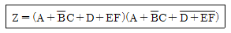
- Z=D+EF
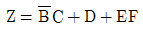
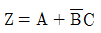
- Z=A+D
(정답률: 85%)
15. 10진수 128을 BCD(Binary Coded Decimal) 부호로 바르게 변환한 것은?
- 0001 0010 1000
- 0100 0010 1001
- 1000 0001 1000
- 0010 0100 0011
(정답률: 91%)
16. NOR 게이트인 다음 그림의 논리회로 기호와 동일한 것은?
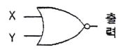
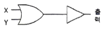
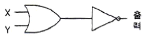
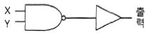
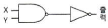
(정답률: 84%)
17. D 플립플롭을 이용하여 구성된 회로가 아닌 것은?
- 8비트 레지스터
- 4비트 쉬프트 레지스터
- 15진 카운터
- BCD 컨버터
(정답률: 83%)
18. BCD 부호를 10진수로, 2진수를 8진수나 16진수로 변환하기 위해 사용되는 회로는 다음 중 어느 것인가?
- 디코더
- 인코더
- 멀티플렉서
- 디멀티플렉서
(정답률: 85%)
19. 3개의 입력 A, B, C 중 2개 이상이 1일 때 출력 Y가 1이 되는 다수결 회로의 논리식으로 맞는 것은?
- Y = AB+BC+AC
- Y = A⊕YB⊕C
- Y = ABC
- Y = A+B+C
(정답률: 87%)
20. 멀티플렉서에 대한 설명 중 옳지 않은 것은?
- 여러 개의 데이터 입력 중 하나를 선택하여 출력 단에 연결하는 회로이다.
- 2n개의 입력선과 1개의 출력선이 존재한다.
- 8×1 MUX는 4개의 선택신호가 필요하다.
- 멀티플렉서는 데이터 선택기라고도 한다.
(정답률: 76%)
2과목: 무선통신 기기
21. AM 수신기에서 중간주파수 선정시 고려해야 할 사항으로 가장 관련이 적은 것은?
- 인입현상
- 감도 및 안정도
- 단일조정
- 초고주파의 영향
(정답률: 78%)
22. 다음 중 단측파대 통신방식(SSB)이 아닌 것은?
- 억압 반송파 SSB
- 저감 반송파 SSB
- 전 반송파 SSB
- 부 반송파 SSB
(정답률: 82%)
23. 디지털 변복조 기기에서 FSK에 대한 설명 중 잘못된 것은?
- 디지털 신호 0일 경우 f1신호, 1일 경우 f2신호를 전송한다.
- FSK 복조는 전송되어 온 피변조파에서 원신호인 0과 1을 복원한다.
- 디지털 데이터를 아날로그 통신망을 사용해 전송하는 기술이다.
- 일명 On-Off Keying(OOK)라 한다.
(정답률: 78%)
24. 주파수변조(FM) 통신방식에서 변조지수는 어떻게 표현되는가? (단, 정보 신호의 최고주파수=fm, 최대주파수편이=Δf)
- Δf/fm
- fm/Δf
- 2Δf/fm
- 2fm/Δf
(정답률: 77%)
25. 디지털 신호의 펄스열을 그대로 또는 다른 형식의 펄스 파형으로 변환시켜 전송하는 방식은?
- 베이스 밴드 전송 방식
- 광대역 밴드 전송 방식
- 협대역 전송 방식
- 반송 대역 전송 방식
(정답률: 87%)
26. 다음 중 위성에 사용되는 트랜스폰더 구성 부품들에 대한 설명으로 적합하지 않은 것은?
- 저잡음 증폭기는 미약하게 수신된 신호를 잡음이 적게 증폭시킨다.
- 다이플렉서는 일종의 방향성 결합기로서 송신 전파와 수신 전파를 분리시킨다.
- 주파수 변환기는 상향링크의 주파수를 헤테로다인 방식을 사용하여 하향링크의 주파수로 변화시킨다.
- 전력증폭기는 증폭 특성을 좋게 하기 위해 반드시 선형역영에서만 동작시킨다.
(정답률: 77%)
27. 국제 위성통신에 사용되는 C-Band 주파수 대역으로 올바른 것은?
- 2~4[GHz]
- 4~8[GHz]
- 8~12[GHz]
- 18~27[GHz]
(정답률: 77%)
28. 다음 중 GPS 시스템의 위성군에 대한 설명으로 적합하지 않은 것은?
- 지상고도 약 20,183[km]에서 원에 가까운 타원궤도를 돌고 있다.
- 총 6개의 궤도면과 각 궤도면에는 최소 4개의 위성이 존재한다.
- 각 위성마다 PRN 코드를 발생하고 있어 위성들을 구분할 수 있다.
- 모두 26개의 위성으로 구성되며 이 중 22개는 항법에 사용되고 4개는 예비용이다.
(정답률: 80%)
29. 위성통신시스템에서 통신영역을 편파 또는 여러 개의 협소 빔으로 공간 분할하는 다원접속기술은?
- SDMA
- CDMA
- TDMA
- FDMA
(정답률: 77%)
30. 이동 통신 시스템에서는 셀과 셀을 오가면서 통화를 할 수 있도록 해주는 것을 핸드오프 (handoff)라고 하는데 그 종류가 아닌 것은?
- 하드 핸드오프(Hard handoff)
- 하더 핸드오프(Harder handoff)
- 소프트 핸드오프(Soft handoff)
- 소프터 핸드오프(Softer handoff)
(정답률: 87%)
31. 전압변동율이 10[%]이고 정격부하 연결시의 출력전압이 220[V]였다면 무부하시 출력전압은 몇 [V]인가?
- 221
- 232
- 242
- 253
(정답률: 83%)
32. 등화기에 대한 설명 중 옳은 것은?
- 전송신호의 대역제한을 위해 사용한다.
- 전송 과정에서 발생하는 신호의 왜곡을 보상하기 위해 사용한다.
- 신호의 식별재생을 위해 사용한다.
- 저역통과 필터의 기능을 한다.
(정답률: 83%)
33. 다음 중 직류전압을 교류전압으로 변환하는 장치는?
- AVR
- UPS
- 인버터
- 변압기
(정답률: 88%)
34. 다음 중 예기치 못한 정전으로부터 시스템 다운을 방지할 수 있는 장치는?
- AVR
- UPS
- 계전기
- 정류기
(정답률: 86%)
35. 1:2의 전원변압기를 통하여 AC 100[V]의 교류입력이 전파 정류되면 출력의 평균 DC 전압은 약 얼마인가?
- 300[V]
- 270[V]
- 200[V]
- 180[V]
(정답률: 82%)
36. 현재 우리나라에서 상용화된 CDMA 및 WCDMA 시스템에서는 다양한 방법의 BER(비트오율) 개선기법이 사용되고 있다. 다음 중 BER을 개선하는 방법이 아닌 것은?
- 채널코딩(channel coding)
- 다이버시티(diversity)
- 핸드오버(hand over)
- 이퀄라이저(equalizer)
(정답률: 77%)
37. 다음 중 CDMA 단말기에서 전원을 on한 이후 가장 먼저 검색하는 채널은 무엇인가?
- 동기 채널
- 호출 채널
- 파일럿 채널
- 통화 채널
(정답률: 82%)
38. 다음 중 CDMA 시스템에서 한 개의 셀을 고려할 때 가장 좋은 통화품질을 기대할 수 있는 채널환경은 무엇인가?
- 수신전계강도(RSSI)가 높고 BER(비트오율)이 낮고 가입자 수가 많다.
- 수신전계강도(RSSI)가 낮고 BER(비트오율)이 높고 가입자 수가 많다.
- 수신전계강도(RSSI)가 높고 BER(비트오율)이 낮고 가입자 수가 적다.
- 수신전계강도(RSSI)가 낮고 BER(비트오율)이 높고 가입자 수가 적다.
(정답률: 83%)
39. 다음 중 λ/4 수직접지안테나의 실효고를 옳게 나타낸 것은?
- λ/π
- λ/2π
- λ/4π
- λ/8π
(정답률: 87%)
40. 맥동률이 2.3[%]일 때, 교류(리플) 전압이 5.06[V]이면 이 때의 직류 전압은 몇 [V]인가?
- 110[V]
- 220[V]
- 330[V]
- 440[V]
(정답률: 82%)
3과목: 안테나 개론
41. 주파수 150[kHz]로 발사하는 무선통신에서 정전계, 유도 전자계, 복사 전자계가 같아지는 거리는 안테나로부터 얼마의 거리인가?
- 320[m]
- 500[m]
- 680[m]
- 770[m]
(정답률: 80%)
42. 무손실 매질 내 비유전율이 5, 비투자율이 5이고 주파수 3[GHz]인 평면파가 전파할 때, 이 파에 대한 파장[m]과 파동 임피던스[Ω]는?
- 0.01[m], 128[Ω]
- 0.02[m], 256[Ω]
- 0.01[m], 256[Ω]
- 0.02[m], 377[Ω]
(정답률: 80%)
43. 다음 중 전파의 성질에 대한 설명으로 틀린 것은?
- 전파는 종파이다.
- 전파는 균일 매질에서는 직진한다.
- 주파수가 낮을수록 회절하는 성질이 있다.
- 굴절율이 다른 매질의 경계면에서는 빛과 같이 반사하고 굴절한다.
(정답률: 91%)
44. 평형ㆍ불평형 변환회로(Balun)에 대한 설명으로 잘못 설명된 것은?
- 평형전류만 흐르게 하며 초단파대 이상의 정합회로로 사용된다.
- 스페르토프형 Balun의 경우 단일 주파수 용으로 쓰인다.
- L, C 소자를 사용하는 것을 분포 정수형 Balun이라 한다.
- 집중 정수형 Balun으로 위상 반전형과 전자 결합형이 있다.
(정답률: 85%)
45. 동조 급전선의 특징에 대한 설명이다. 틀린 것은?
- 정합장치가 불필요하다.
- 급전선 상에 정재파를 실어 급전한다.
- 전송효율이 비동조 급전선보다 좋다.
- 급전선의 길이와 파장은 일정한 관계가 있다.
(정답률: 74%)
46. 공중선을 도파관에 정합하는 경우 아래의 임피던스 정합 방법 중 적당하지 않은 것은?
- 도파관 창에 의한 정합
- 무반사 종단기에 의한 정합
- 도체봉에 의한 정합
- 방향성 결합기에 의한 정합
(정답률: 75%)
47. 동축케이블 급전선의 내부 도체를 제거한 것과 같이 고역필터로서 작용을 하며 고주파 급전과정에서 방사손실이 거의 없는 특성을 갖는 급전선은?
- 도파관
- 마이크로 스트립
- 공동 공진기
- 평행5선식 급전선
(정답률: 87%)
48. 선박용 무선송신기의 공중선 결합회로로 가장 많이 사용되는 것은?
- T형 결합회로
- 유도형 결합회로
- π형 결합회로
- 역L형 결합회로
(정답률: 75%)
49. 다음 중 마이크로파에 이용되는 공중선의 이득에 관계없는 요소는?
- 주파수
- 송신기 출력
- 반사면의 고르기
- 공중선의 개구면적
(정답률: 69%)
50. 수신기에서 수신 전력을 증가시키는 방법으로 옳지 않은 것은?
- 상대 송신전력을 증가시킨다.
- 지향성이 낮은 안테나를 사용한다.
- 이득이 높은 안테나를 사용한다.
- 실효고가 높은 안테나를 사용한다.
(정답률: 83%)
51. 다음 중 선박용 레이더 안테나로 많이 사용되는 것은?
- 루프 안테나
- Slot array 안테나
- 카세그레인 안테나
- Horn reflector 안테나
(정답률: 83%)
52. 전계강도의 단위는?
- A/m
- V/m
- F/m
- C/m
(정답률: 84%)
53. 다음 중 장중파용 공중선 특징으로 맞는 것은?
- 실효고를 높이는 구조의 공중선이 많이 사용된다.
- 파장이 짧으므로 고유파장의 공중선을 얻기 쉽다.
- 설치비가 비교적 저렴하다.
- FM 통신방식, TV 방송 등 주파수 대역이 넓은 통신에도 사용되므로 광대역 임피던스 특성을 보인다.
(정답률: 53%)
54. 단파통신에서 생기는 페이딩(Fading)에 대한 경감 방법으로 적합하지 않은 것은?
- 간섭성 페이딩은 주파수 합성수신법을 사용한다.
- 편파성 페이딩은 편파 합성수신법을 사용한다.
- 도약성 페이딩은 주파수 합성수신법을 사용한다.
- 흡수성 페이딩은 공간 합성수신법을 사용한다.
(정답률: 64%)
55. 다음 중 VHF대 이상에서 주로 발생하는 신틸레이션(Scintillation) 페이딩의 특징으로 맞는 것은?
- 여름보다 겨울에 많이 발생한다.
- 레벨 변동폭은 10[dB] 이상이다.
- 반사수면의 파동으로 발생한다.
- 발생주기가 아주 짧으며, 전계강도는 수 10[dB] 이상이다.
(정답률: 64%)
56. 우주통신에서 전파의 창 범위를 결정하는 요소로 적합하지 않은 것은?
- 우주잡음의 영향
- 전리층의 영향
- 정보 전송량의 영향
- 도플러 효과의 영향
(정답률: 77%)
57. 다음 지상파 중 지표파가 주가 되는 주파수대는 어느 것인가?
- 장중파대
- 단파대
- 초단파대
- 마이크로파대
(정답률: 81%)
58. 송수신점 사이의 거리가 먼데도 불구하고 수신전계가 크게되는 것을 무엇이라고 하는가?
- 자기람
- 대척점 효과
- 룩셈브르크 효과
- 델린저
(정답률: 68%)
59. 다음 중 단파가 멀리까지 도달하는 이유는?
- 감쇠가 작기 때문에
- 지표파를 이용하기 때문에
- 전리층 반사파를 이용하기 때문에
- 굴절되어 전파되기 때문에
(정답률: 78%)
60. 다음 중 대기 잡음이 아닌 것은?
- 공전 잡음
- 침적 잡음
- 온도 잡음
- 전류 잡음
(정답률: 87%)
4과목: 전자계산기 일반 및 무선설비기준
61. 다음 중 운영체제에 대한 설명으로 거리가 먼 것은?
- 컴퓨터 하드웨어에 대한 자원을 관리하는 소프트웨어이다.
- 응용 프로그램과 하드웨어 자원에 대한 연계 역할을 수행하는 소프트웨어이다.
- 컴퓨터에서 항상 수행되고 있으며, 운영체제의 가장 핵심적인 부분은 커널(kernel)이다.
- 사용자가 필요하다고 생각되는 경우 쉽게 접근하여 운영체제의 프로그램을 변경할 수 있다.
(정답률: 86%)
62. 다중 프로세서 시스템에 관한 설명 중 맞는 것은?
- 프로세서나 복잡한 컴퓨터들이 노드를 이루면서 동작하는 시스템
- 복합적이면서도 밀접한 관계를 유지하면서 동작하는 시스템
- 병렬적이면서 동기적인 컴퓨터 시스템에서 동시에 여러 개의 태스크(task)를 수행하는 시스템
- 플린(Flynn)의 MIMD 구조로 둘 이상의 프로세서를 가진 시스템
(정답률: 72%)
63. 다음 중 괄호 안에 들어갈 용어로 옳은 것은?
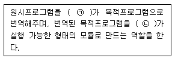
- ㉠ 컴파일러, ㉡ 어셈블러
- ㉠ 링커, ㉡ 컴파일러
- ㉠ 컴파일러, ㉡ 링커
- ㉠ 링커, ㉡ 어셈블러
(정답률: 83%)
64. 다음과 같은 운영체제의 운용 기법은?
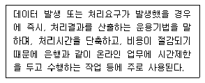
- 단일 사용자 시스템
- 실시간 처리 시스템
- 분산처리 시스템
- 시분할 시스템
(정답률: 87%)
65. 마이크로프로세서와 메인 메모리 사이의 속도 차이로 인한 성능 저하를 방지하기 위해 사용되는 구조는 무엇인가?
- USB 2.0
- Boot loader
- Cache
- DMA
(정답률: 80%)
66. 입출력 포트의 종류 중 병렬 포트(Parallel Port)가 아닌 것은?
- USB
- FDD
- HDD
- CD-ROM
(정답률: 87%)
67. 다음 중 정보의 단위가 작은 것에서 큰 순으로 올바르게 나열된 것은?
- Bit < Nibble < Byte < Word
- Bit < Byte < Nibble < Word
- Nibble < Bit < Word < Byte
- Nibble < Bit < Byte < Word
(정답률: 79%)
68. 다음 중 Deadlock을 발생시키는 원인이 아닌 것은?
- 점유와 대기(Hold and wait)
- 순환 대기(Circular wait)
- 상호 배제(Mutual exclusion)
- 선점(Preemption)
(정답률: 83%)
69. 마이크로컨트롤러의 주변 장치들을 제어하거나 주변 장치의 상태를 읽기 위해 할당된 특수 목적 레지스터를 무엇이라고 하는가?
- 누산기
- PC
- DR
- SFR
(정답률: 80%)
70. 다음 중 인터럽트의 처리과정으로 옳지 않은 것은?
- 인터럽트 처리루틴의 시작번지에 점프하여 루틴을 수행한다.
- 레지스터 내용을 스택에서 Pop한다.
- 중단했던 점의 이전 명령부터 처리해 간다.
- 프로그램 카운터의 내용을 스택에 Push한다.
(정답률: 68%)
71. 방송통신위원회가 전파자원의 공평하고 효율적인 이용을 촉진하기 위하여 시행하여야 할 사항과 다른 것은?
- 주파수 분배의 변경
- 이용실적이 저조한 주파수의 활용촉구
- 새로운 기술방식으로의 전환
- 주파수의 공동사용
(정답률: 65%)
72. 방송통신위원회가 무선설비 등에서 발생하는 전자파가 인체에 미치는 영향을 고려하여 고시하는 기준이 아닌 것은?
- 전자파 인체보호기준
- 전자파 강도 측정기준
- 전자파 흡수율 측정기준
- 전자파 자원 개발기준
(정답률: 77%)
73. 주파수 2.4[kHz]를 필요주파수대폭의 표시방법으로 바르게 표시한 것은?
- K240
- 2K40
- 240K
- 20K4
(정답률: 89%)
74. 무선국의 정기검사에서 성능검사 항목에 해당되지 않는 것은?
- 점유주파수대폭
- 혼신 및 잡음대역폭
- 주파수
- 공중선전력
(정답률: 55%)
75. 다음 중 무선설비산업기사의 기술운용 범위로 틀린 것은?
- 공중선전력 3킬로와트 이하의 무선전신 및 팩시밀리
- 공중선전력 1.5킬로와트 이하의 무선전화
- 레이더
- 공중선전력 3킬로와트 이하의 다중무선설비
(정답률: 66%)
76. 다음 중 무선통신업무에 종사하는 자는 ( )년 마다 1회의 통신보안교육을 받아야 하는가?
- 3년
- 4년
- 5년
- 6년
(정답률: 68%)
77. 중파방송을 하는 방송국의 경우 공중선전력은 원칙적으로 얼마 이하이어야 하는가?
- 20킬로와트
- 30킬로와트
- 50킬로와트
- 100킬로와트
(정답률: 64%)
78. 다음 중 전파환경측정의 종류에 해당되지 않는 것은?
- 전파환경의 조사
- 전파응용설비의 측정
- 전자파차폐성능 측정
- 전자파흡수율 측정
(정답률: 65%)
79. 다음 중 전자파적합기기로서 주로 가정에서 사용하는 것을 목적으로 하는 기종은?
- A급 기기
- B급 기기
- C급 기기
- D급 기기
(정답률: 70%)
80. 다음 중 무선설비 공중선 등의 안전시설기준으로 잘못된 것은?
- 공중선계에 피뢰기 및 접지장치를 설치하여야 한다.
- 송신설비의 공중선 등 고압전기를 통하는 장치는 사람이 보행하거나 기거하는 평면으로부터 2[m]이상의 높이에 설치하여야 한다.
- 간이무선국의 공중선계에는 피뢰기를 설치하지 않아도 된다.
- 공중선은 공중선주의 동요에 따라 절단되지 아니하도록 설치하여야 한다.
(정답률: 80%)